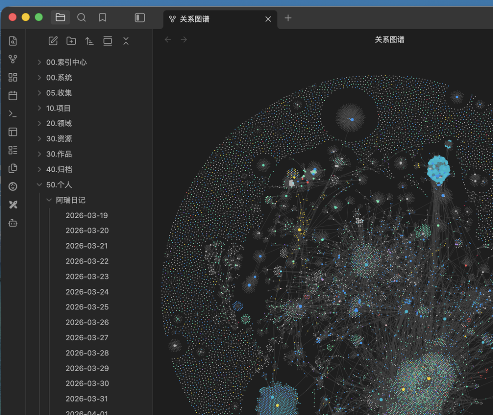
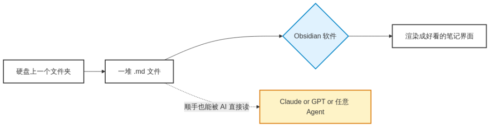
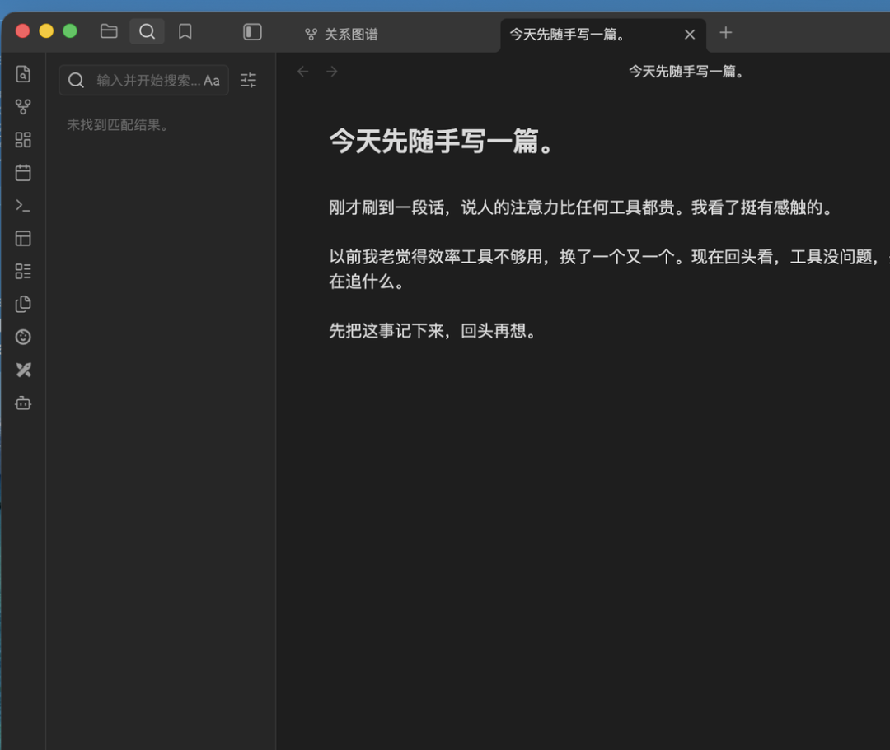
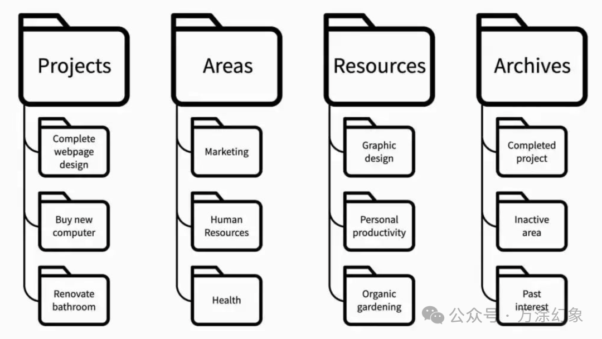
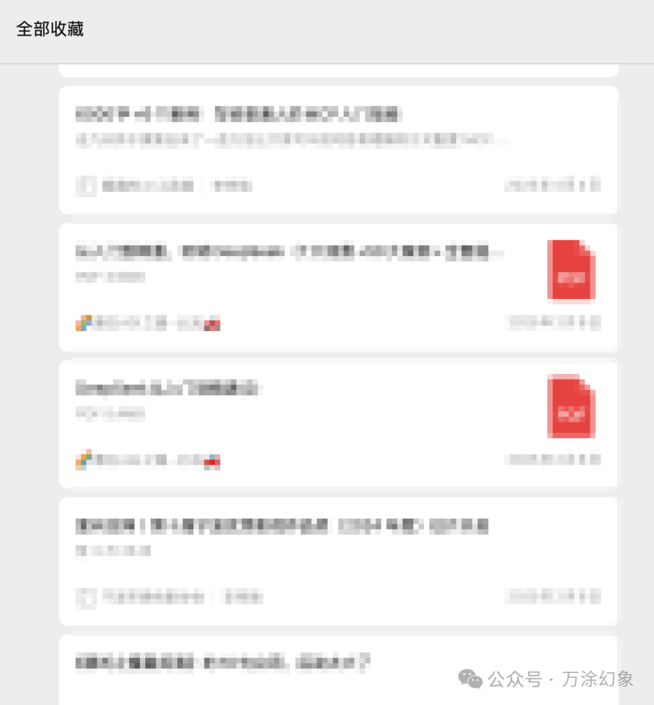
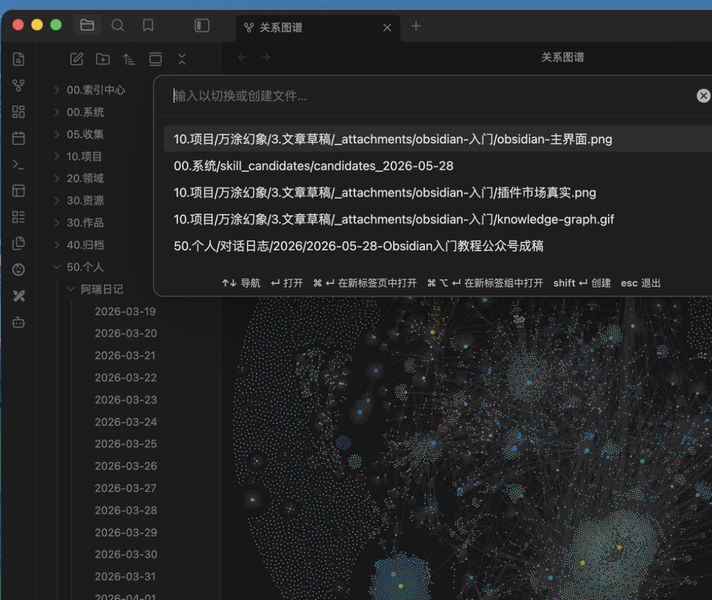
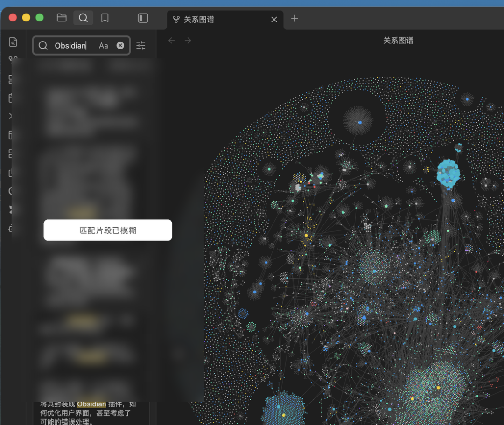
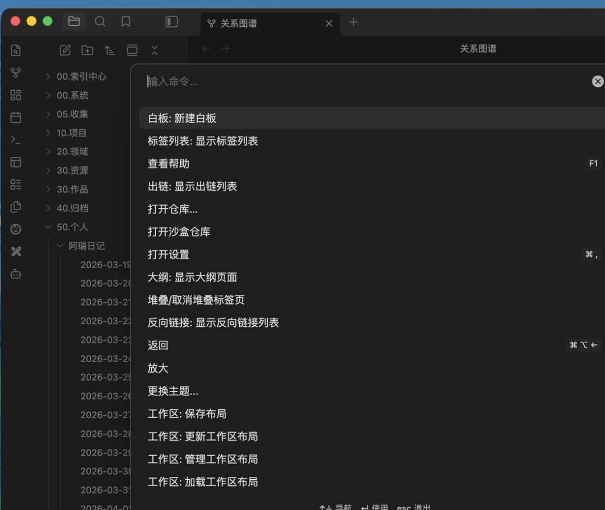
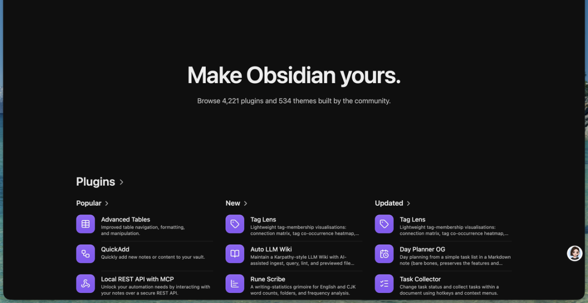
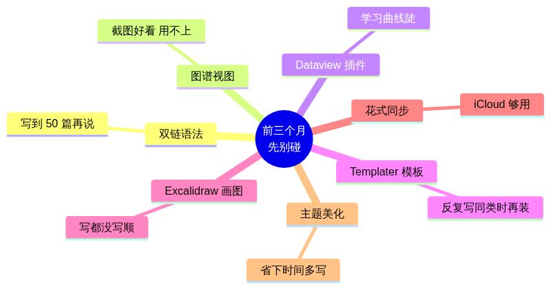

新手前三个月，只做这三件事
嗨，大家好，我是祥瑞，一个整天折腾 AI 怎么落地的 00 后。
前两天有个朋友在群里冒了一句，说自己一年前听人安利装了 Obsidian，下载完打开看了两眼就关了，从那之后再也没打开过，图标一直安静地待在他的应用程序文件夹里，跟没装过没什么区别。底下立刻有六七个人接，说我也是、我也是、我装了俩月连第一篇笔记都没建。
我当时看着看着就乐了。
不是笑他，是这事儿真的太常见了。
网上的 Obsidian 入门贴我也翻过不少。标题都挺猛，什么“30 个必装插件”“Vault 完美结构”“双链笔记法完全指南”。
看完确实会觉得厉害。
然后更不敢打开了。
所以这篇我换个写法。
不讲插件，不讲图谱，不讲第二大脑。你如果是新手，前三个月先干三件事就够了：
第一件：写够 30 篇，啥都行，先写。
第二件：以后看见想存的东西，全往里丢，每条配一行你自己的话。
第三件：以后想搜东西，先搜自己库，搜不到再去外面找。
别嫌土。
Obsidian 真正用起来，靠的就是这些土办法。
我先说说我在社区里看到的情况。
经常有人问 Obsidian 怎么用。但真正卡在门口的人，问的往往不是“怎么用”，而是“我该怎么规划”。
“我应该建多少个文件夹？”
“我要不要先把 PARA 学会再开始？”
“双链是不是必须用？”
“我看那个谁谁谁 Vault 里好几万篇笔记，我从零开始怎么追得上？”
每次看到这种问题我都想叹气。
这不是他懒，也不是他笨。
很大程度上，是被那些“高级玩家秀”吓住了。
你打开小红书搜一下 Obsidian，刷出来的经常是“我的 Vault 笔记图谱”。密密麻麻一大团，跟天文望远镜拍出来的星云似的，下面再配一句：建立你的第二大脑。

我自己 Vault 的图谱炸开效果，算上镜像资料，一万三千多篇内容连成一张网
我自己 Vault 现在确实也长这样，截图发出去还挺唬人的。
但这个数字是结果，不是起点。
这玩意儿不是规划出来的，是写出来的。
我也不是哪天坐下来说“我要建一个一万三千篇的 Vault”，然后开始画蓝图。没有那么体面。
一开始就是先写第一篇，再写第二篇。写到一百篇左右，才觉得好像得分个类。再往后，东西越来越多，才慢慢长出现在这套结构。
顺序反了，人就容易死在门口。
我见过太多这种情况：装完 Obsidian，打开一个空 Vault，对着空白界面琢磨一晚上文件夹该怎么命名。
第二天忘了。
两个月后想起来，打开一看，里面只有当初建的五个空文件夹。
索然无味。
关掉。
继续吃灰。

Obsidian 主界面，左边文件树，中间编辑区，右边挂点图谱。说白了，没有想象中那么玄乎
Obsidian 对新手最不友好的就是这点：它什么都不给你，全让你自己决定。
别的笔记软件多少给你点指引。收件箱、模板、空白页，反正先把你往前推一下。
Obsidian 不一样。
它给你一个空文件夹，然后说：随便你。
很多人就死在这个“随便你”上。
动手之前，先把 Obsidian 去神秘化。
你可以先粗暴地理解成：Obsidian 就是一个文件夹浏览器。
你在电脑上建一个文件夹，往里塞几个 .md 文件。这个 .md 文件也没多高级，本质就是文本文件，记事本都能打开。
然后你用 Obsidian 把这个文件夹打开，它就把这些文件渲染成更顺眼的样子。
就这么简单。

一个文件夹，一堆 .md 文件，再加一个把它们显示得好看点的软件。先这么理解就行
你写的所有东西，都是硬盘上一个一个真实存在的 .md 文件。不是数据库里的某一行记录，不是云服务器上的某个 ID，就是你自己电脑硬盘上一个能用任何文本编辑器打开的文件。
这件事听着平常，但它是 Obsidian 跟别的笔记软件最大的区别，也是我用得越久越踏实的一点。
哪天 Obsidian 公司倒闭，你的笔记不会跟着没了，记事本、VSCode 都打得开。
哪天你想换软件，直接把文件夹搬走就行，不用导出，不用等迁移工具，也不用担心某个奇怪格式丢一半。
哪天你想让 AI 帮你处理笔记，把 .md 文件拿过去，它也能读。
就这么直白。你的整个知识库，就是一个文件夹里的一堆文本文件。
我之前是个特别典型的收藏夹选手。
公众号收藏一千多篇，飞书云文档里塞了几百个链接，Chrome 书签夹分了三十多个文件夹，微信浮窗里常年挂着几十条没看的。
那些东西现在基本都找不回来了。
不是被删了。
是它们躺在不同 App、不同账号、不同服务里。真要用的时候，我脑子里只有一个很模糊的印象：我好像在哪儿存过。
然后就没然后了。
每个 App 都跟你说，放我这里最安全。
可放着放着你会发现，安全是安全，安全到自己都用不起来。
Obsidian 这个事让我特别踏实的一点就是：我的东西就在我硬盘上，一个个真实的小文件，我自己说了算。
所以第一步别想复杂。
你可以先把 Obsidian 理解成你硬盘上的一个文件夹，恰好有个软件能把里头的文件渲染得好看一点。
还有一点我用越久越觉得值。
你写的每一篇笔记，都是一个真实的 .md 文件。将来你想让 AI 帮你处理这些笔记，它直接读就行，不用截图，不用复制粘贴，也不用绕一大圈导出。
我现在每天就这么干，让 Claude Code 直接进 Vault 干活，搜素材、写文章、整理思路。
这事儿对我影响挺大的。
你现在攒下的每一篇笔记，将来都可能变成 AI 能直接用的料。
当然，不是说只有 Obsidian 能做到。本地 Markdown 工具都能往这个方向走。
但跟很多云端收藏夹比起来，这种“文件就在我手里，AI 也能直接读”的踏实感，确实不一样。
今天你可能用不上。
三年后再看，可能就不一样了。
下载完 Obsidian 打开，它会问你新建一个 Vault 还是打开一个现有的。Vault 就是上面说的那个文件夹。你随便选一个位置，建一个空 Vault，名字随便取，叫“我的笔记”“草稿”“乱写”都行。
然后你进去，按 Cmd+N 新建一篇笔记，Windows 用户按 Ctrl+N，名字也随便取。
然后别想任何事，开始写。
你今天遇到了什么事，写。
你刚才刷到一段什么话觉得有点意思，写。
你脑子里冒出来一个工作上的想法，写。
你跟谁聊天聊出来一段共鸣，写。
不用想这篇笔记该放在哪个文件夹，不用想它该有什么标签，不用想它要不要跟别的笔记连起来。就是写。
写完了直接关掉就行，Obsidian 默认是自动保存，不用你按任何键。

Obsidian 里一篇空白新笔记长这样 顶上是标题 下面随便写几段就完事了 别想多
第二天再来，新建一篇，继续写。
你可能会觉得，这也太敷衍了吧。
那我装 Obsidian 干嘛？我用记事本不也能写？
区别等你写到第二十篇就出来了。
到那时候，你的文件列表里会开始出现一种很微妙的感觉：
我前阵子是不是写过类似的？
你写新东西的时候，突然想起某篇旧笔记。按 Cmd+O，Windows 用户按 Ctrl+O，输个关键词，那篇笔记跳出来。
这时候 Obsidian 才算真的开始为你干活。
不是因为你文件夹建得漂亮，也不是因为你装了多牛的插件。
是因为你终于写够了一点量。
20 篇之前，规划基本都是空话。你都不知道自己平时会写什么，规划啥呢。
我自己的 Vault 一开始也乱七八糟。根目录里散着各种临时记录、文章草稿、想法碎片，很多标题现在回头看都挺随意。
写到三五百篇的时候，我才开始觉得：行，是该收拾一下了。
那时候再分类，就不痛苦了。因为你已经知道自己手里到底有什么。

PARA 这种框架不是不能学，只是别在第一天就学。先写出点东西，比背框架重要
所以第一件事就一句话：
先写，写够了再说。
什么叫够了？我的标准是 30 篇。
30 篇之前，别给自己加规则。
写完一篇关掉，下次想起来再开一篇。中间重复的、写错的、跑题的都无所谓。前 30 篇就是你给这个文件夹喂的口粮，没这口粮它长不起来。
第二件事也不复杂。
以后看到想存的东西，先往 Obsidian 里扔。
什么叫想存的东西？
你在公众号刷到一段话，心里咯噔一下“这个我以后可能用得上”。
你在小红书看到一个观点，挺有共鸣。
你跟朋友聊天聊出来一段对话，觉得值得记下来。
你在某个群里看到有人扔出来一段截图，里头的信息你想留着。
以前我的反应很熟练。
公众号点收藏，小红书点收藏，朋友圈截图存相册，群消息复制粘贴到小号备注里。
动作都很快。
结果一年下来，几百条东西散在十几个地方。真要用的时候，我完全想不起来当时存在哪儿。

我以前微信收藏夹里塞了一千多条。后来真要找东西，基本靠运气
后来我才发现，东西只要散在十几个 App 里，对我来说基本就等于没了。
不是它不存在。
是我用的时候根本摸不到它。
所以新手期最该改的，不是文件夹结构。
是入口。
所有想存的东西，先往一个地方放。
怎么塞？不用搞复杂。
最土的办法：复制，打开 Obsidian，新建一篇，粘贴进去。
再加一行：我为什么要存它。
这一行特别重要。
稍微讲究一点，你可以建一个“收件箱”或者“随手存”文件夹。所有东西先扔进去，不分类，不打标签，不整理。周末有空再翻。
再往后，你用 Obsidian Web Clipper、手机 ShareSheet 都行。但那是后面的事。
前面这个土办法没跑顺，插件只会给你增加一个新的折腾理由。
很多人剪存东西特别勤快，原文一字不漏地复制下来，然后就完了。
三个月后再看，盯着那段话发呆：
我当初为啥要存这个？
如果你顺手写一行“这段说的对，可以用在以后讲社群运营的时候”“这个数据可以反驳某某观点”“这个例子特别像我妈那次跟我说的”，你三个月后再看就完全不一样了。你存的不是那段话，是你当时那个想法。
这一行往往比原文还值钱。
原文是别人的话。
那一行是你的话。
存到一定量你会撞上一个特别上头的瞬间。
某天你写新东西，随手搜个关键词。半个月前存的一段话突然蹦出来，刚好跟你现在想的事对上了。
那一下挺爽的。
撞过一次你就明白，为什么要有个自己的本地知识库。
写了，也存了，下一步就是搜。
这一步看着最简单，其实最容易被忘掉。
我见过很多人，库里已经攒了几百篇笔记，但平时根本想不起来搜。写东西的时候继续硬想，想不出来再去浏览器现搜。
自己的库就在旁边躺着，完全没被调用。
所以你得刻意训练一下。
接下来一周，每次你准备打开浏览器搜东西之前，先打开 Obsidian 搜一下。
哪怕你心里很确定库里没有，也搜一下。搜不到再去浏览器，搜到了就回来读自己之前写的那条。
这个动作一开始很别扭。
因为浏览器已经被我们练成肌肉记忆了。你得硬刹一下车。
先搜自己的库。
练上两周，你会发现一件事：你写过、存过的东西，比你以为的多。
很多你以为得现查的东西，其实库里早就有了，只是你忘了。有些你以为很新的想法，其实半年前你已经写过一遍，那时候的版本可能比你现在想的还清楚。
Obsidian 原生搜索就够新手用了。先记三个快捷键。
第一个 Cmd+O / Ctrl+O：按文件名搜。

按文件名搜。记得模糊一点搜，别非得一字不差
第二个 Cmd+Shift+F / Ctrl+Shift+F：按全文搜。

按全文搜。你会发现自己以前写过一堆自己都忘了的东西
第三个 Cmd+P / Ctrl+P：命令面板，能干各种事。

命令面板。找不到按钮的时候，来这儿搜功能名就行
不用学正则，不用学 Dataview，不用装任何插件。原生这三个快捷键，已经够覆盖新手期 90% 的搜索需求。
搜到之后也别急着关。
先读自己。
你看一眼当初写的那条，提醒自己当时怎么想的。
如果这次想得更清楚，就在下面补一笔：
“2026 年某月再看：上次说得不够准，其实应该是……”
你的笔记会越用越准。
前提是你真的回去用它。
写、存、搜，这三件事坚持三个月，Obsidian 就不再是一个图标了。
它会变成一个能接住你思路的小工具。
讲到这儿，你可能还是惦记那些东西。
双链呢？
图谱呢？
插件呢？
模板呢？
我说实话。
新手前三个月碰这些，大多数时候都是负担。

Obsidian 社区插件和主题目录，四千多个插件、五百多个主题，看一眼就慌
这份清单你扫一眼就行：

前三个月先别碰的七件事。不是永远别碰，是先别让它们挡路
我自己 Vault 现在确实装了一堆插件、用了一堆高级玩法、有自己的一套结构。但那是写了一万多篇之后慢慢长出来的。
高级玩家的 Vault 也是从空文件夹一点点长出来的。
没人一开始就把所有东西配齐再开始。
你想全配齐再开始，大概率就会变成那个装了一年没打开的人。
慢慢来。让 Obsidian 先在你日常里跑起来，剩下的以后再说。
如果你是那种装了 Obsidian 一直没怎么用的人，我希望今天看完，你能把它重新打开一下，写一篇笔记，写啥都行。
如果你是听人安利，正准备装的人，装完也别急着搜“Obsidian 入门”。
那一搜，很容易又搜回插件、图谱、完美结构那套东西里。
直接打开。
新建一篇。
写就完事了。
三件事再说一遍：
坚持仨月，剩下的你自己就知道该怎么往下走了。
希望你那个吃灰的 Obsidian，今天能被你重新打开一次。